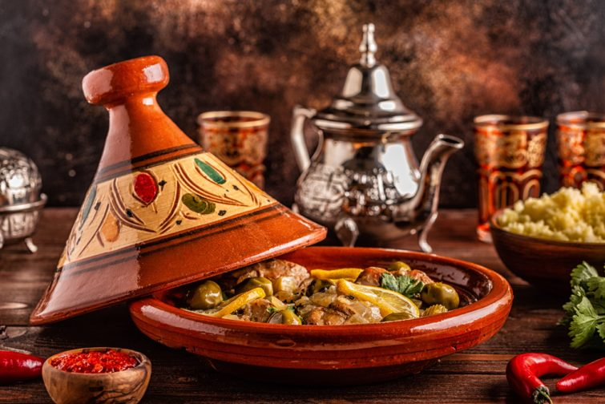

Présentation
La CM est réputée pour sa richesse et sa diversité. Elle mélange des influences berbères,arabes et andalouses, offrant des plats savoureux et parfumés. Le tajine, un ragoût cuit lentement, est emblématique, tout comme le couscous, souvent servi lors des grandes occasions. Les épices, telles que le cumin, le safran et la cannelle, jouent un rôle essentiel dans la préparation des plats. Enfin, les pâtisseries marocaines, comme les cornes de gazelle, ajoutent une touche sucrée à cette gastronomie raffinée.
Le fameux tajine marocain
Les plats marocains
- Tâche à complir N°1
- Tâche à complir N°2
- Tâche à complir N°3
- Element 3
- Element 2
- Element 1
- Couscous aux sept légumes
- Couscous aux raisins secs et ognions caramélisés
- Tajine aux pruneaux et amandes
- Tajine aux poulets et olives et citron confit
- Pastilla poulets et amandes
- Pastilla fruits de mers